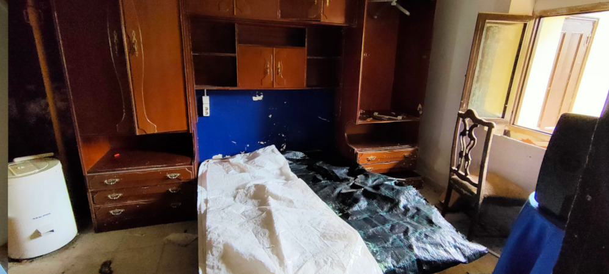
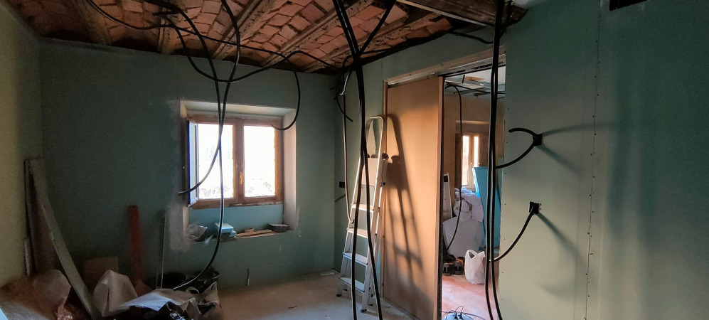
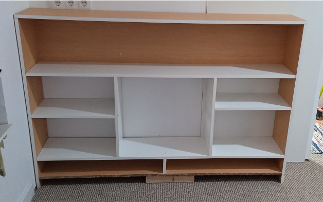

Esta casa estaba en ruina, y decidí ponerme manos a la obra y reformarla por completo, con mis dos niños a cuestas, y toda la energía del mundo
La casa se encontraba en unas condiciones lamentables, las paredes se caían, estaba llena de hongos, la madera estaba podrida, y lo primero que tuve que hacer fue sacar todos los muebles para tirarlos.

El baño tenía la mampara rota, no cuadraba tampoco con la plataforma de ducha, y el lavabo tenía el grifo que se movía, pero ¡Salía agua! y eso me hizo muy feliz.
Tirar las paredes fue fácil, aunque acabé con la espalda fatal, sin poder moverme. Y me puse a poner pladur, por primera vez, la primera placa, se me partió por la mitad, pero las siguientes, me quedaron mejor.
Después de poner el pladur, pinté las paredes, y bueno, ahí no se ve, pero puse una moqueta, hice dos estanterías, y el mueble de la tele, y aquí es donde trabajo y vivimos los niños y yo.
El mueble de la tele quedó bastante chulo, ya tengo mucho más espacio para guardar cositas.
